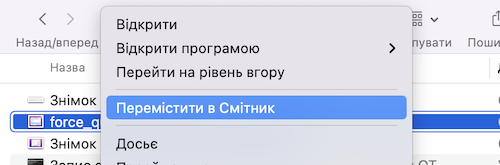
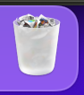
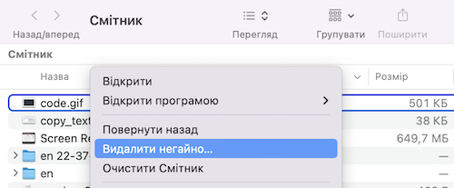

Для видалення файлів на Mac виконайте наступні кроки:
- Крок 1: Знайдіть файл, який ви хочете видалити, у вікні Finder або на робочому столі.
- Крок 2: Клацніть правою кнопкою миші(клік двома пальцями на трекпаді) на файлі.
- Крок 3: Виберіть опцію "Перемістити у Смітник" (Move to Trash). Файл буде переміщений в смітник.
- Крок 4: Якщо ви хочете видалити декілька файлів, виберіть їх, клацнувши на них, утримуючи клавішу "Command", а потім виконайте кроки 2-3.
- Крок 5: Якщо ви хочете видалити файли, які знаходяться в кошику, відкрийте його та виберіть файли, які потрібно видалити.
- Крок 6: Клацніть правою кнопкою миші на вибраних файлах.
- Крок 7: Виберіть опцію "Видалити негайно" (Delete Immediately), якщо ви хочете видалити файли назавжди, без можливості їх відновлення.

Щоб відкрити Смітник клікніть на зображення смітника в правому куті нижнього меню маку.

Це все! Файли будуть видалені з вашого Mac.